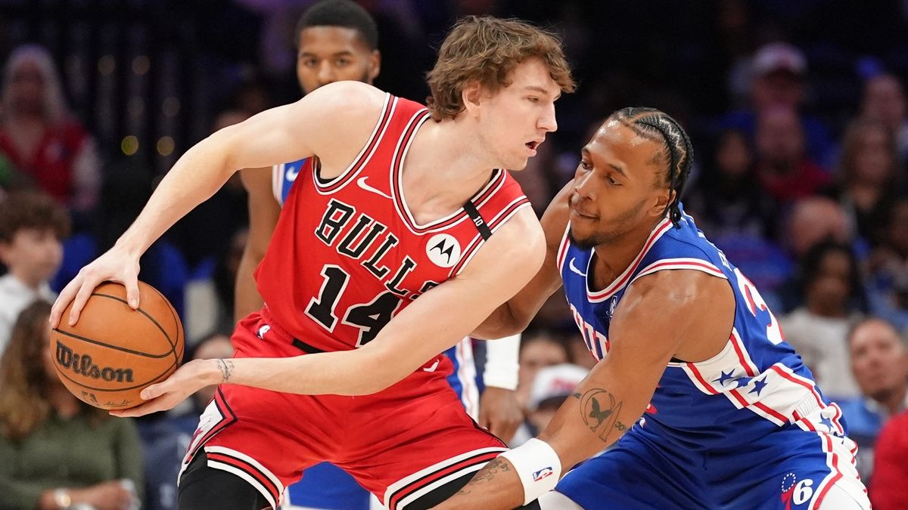

Matas Buzelis, decidido a tomar el mando de los Bulls
¿Qué necesitan los Chicago Bulls? Puede que muchas cosas, pero mientras eso ocurre ya hay un Matas Buzelis determinado a ser el líder.
Alvaro arenillas 12 de agosto 2025
Mientras las dudas crecen en Chicago con el futuro de piezas de gran calibre como Coby White y Josh Giddey, hay otra que desde la calma ha tomado posición no solo para brillar, sino para incluso convertirse en el líder del nuevo proyecto de lo los Bulls. Sí, hablamos de un Matas Buzelis que lleva meses determinado a tomar el mando del equipo.
Con el deseo compartido por la organización de Illinois, el alero de 20 años estuvo en la lotería del draft y ha sido pieza importante de todo lo que se lleva meses proyectando como imagen del equipo; tanto es así que hace pocos días hizo de modelo, luciendo la camiseta a rayas de la era de Michael Jordan que el equipo vestirá la próxima temporada. Son detalles que indican que en el United Center han visto algo en él.
«Tiene muchísima habilidad. Tira triples, tapona tiros, corre contraataques, clava el balón… Es atlético, puede poner el balón en la cancha, crear oportunidades para los demás. Hemos visto mucho de eso este año», comentaba el vicepresidente ejecutivo de operaciones de baloncesto, Arturas Karnisovas, hace algunos meses.
El escolta viene de una decepción mayúscula en Phoenix. Donde contribuyó activamente al fracaso del equipo más caro de la historia. Por lo que costó hacerse con él, las limitaciones derivadas de su peculiar contrato y su rendimiento. Ahora, llegando a Los Angeles Clippers cobrando tan solo 5,3 millones de dólares, las expectativas y encaje son distintas.
La realidad es que más allá del talento que atesora, en Chicago ha convencido la ética de trabajo de Buzelis. Según informa Joe Cowley de Chicago Sun Times, los Bulls ven en él un jugador centrado y con las cualidades necesarias para ser realmente bueno, algo a lo que suma el haber iniciado los entrenamientos nada más acabar el curso pasado, estando incluso en los training camps voluntarios del mes de mayo en Los Ángeles. Y por si faltasen datos para el optimismo, en los partidos jugados en Las Vegas Summer League se ha ido a un promedio de 22.5 puntos y 5 rebotes.